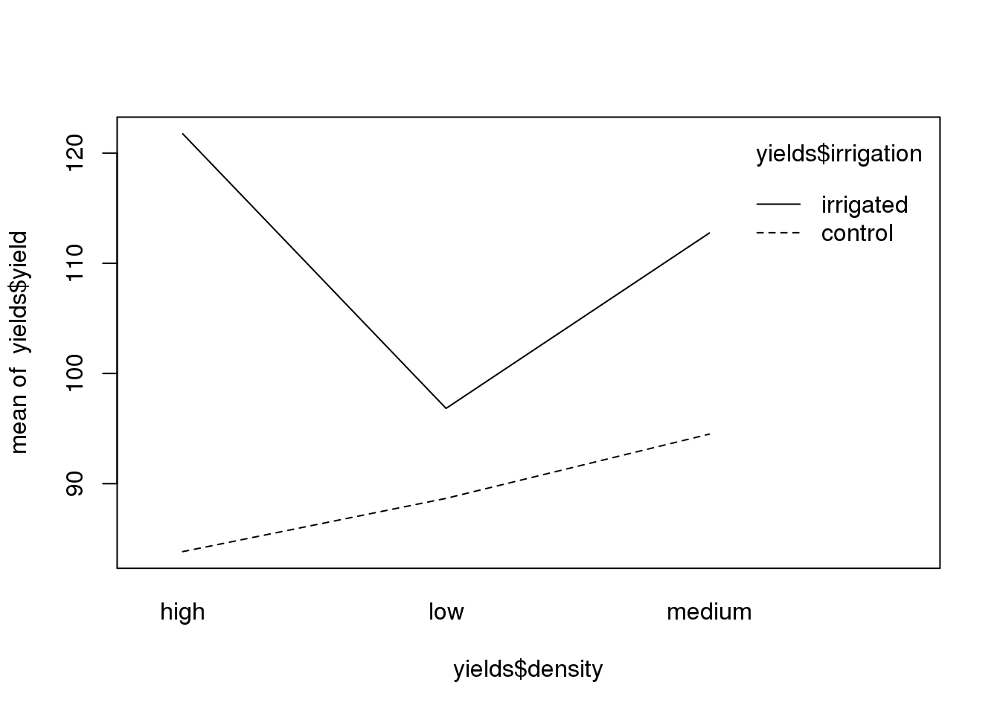

9.4 Übung
9.4.1 Aufgabenstellung
9.4.1.1 Logistic Regression
Datensatz isolation.csv
In this example, the response variable is called incidence; a value of 1 means that an island was occupied by a particular species of bird, and 0 means that the bird did not breed there. The explanatory variables are the area of the island (km2) and the isolation of the island (distance from the mainland, km).
9.4.1.2 Split-plot ANOVA-Versuchsdesign
Datensatz splityield.csv
In a split-plot experiment, different treatments are applied to plots of different sizes. Each different plot size is associated with its own error variance, so instead of having one error variance (as in all the ANOVA tables up to this point), we have as many error terms as there are different plot sizes. The analysis is presented as a series of component ANOVA tables, one for each plot size, in a hierarchy from the largest plot size with the lowest replication at the top, down to the smallest plot size with the greatest replication at the bottom. The example refers to a designed field experiment on crop yield with three treatments: irrigation (with two levels, irrigated and not), sowing density (with three levels, low, medium and high), and fertilizer application (with three levels, low, medium and high).
The largest plots were the four whole fields (block), each of which was split in half, and irrigation was allocated at random to one half of the field. Each irrigation plot was split into three, and one of three different seed-sowing densities (low, medium or high) was allocated at random (independently for each level of irrigation and each block). Finally, each density plot was divided into three and one of three fertilizer nutrient treatments (N, P, or N and P together) was allocated at random.
9.4.2 Lösung
9.4.2.1 Musterlösung Aufgabe 1: Logistic Regression
Aus Crawley (2015 S. 275-276, leicht angepasst)
island <- read.csv("16_Statistik4/data/isolation.csv")
names(island)
## [1] "incidence" "area" "isolation"
model1 <- glm(incidence~area*isolation,binomial, data = island)
model2 <- glm(incidence~area+isolation,binomial, data = island)
anova(model1,model2,test="Chi")
## Analysis of Deviance Table
##
## Model 1: incidence ~ area * isolation
## Model 2: incidence ~ area + isolation
## Resid. Df Resid. Dev Df Deviance Pr(>Chi)
## 1 46 28.252
## 2 47 28.402 -1 -0.15043 0.6981
summary(model2)
##
## Call:
## glm(formula = incidence ~ area + isolation, family = binomial,
## data = island)
##
## Deviance Residuals:
## Min 1Q Median 3Q Max
## -1.8189 -0.3089 0.0490 0.3635 2.1192
##
## Coefficients:
## Estimate Std. Error z value Pr(>|z|)
## (Intercept) 6.6417 2.9218 2.273 0.02302 *
## area 0.5807 0.2478 2.344 0.01909 *
## isolation -1.3719 0.4769 -2.877 0.00401 **
## ---
## Signif. codes: 0 '***' 0.001 '**' 0.01 '*' 0.05 '.' 0.1 ' ' 1
##
## (Dispersion parameter for binomial family taken to be 1)
##
## Null deviance: 68.029 on 49 degrees of freedom
## Residual deviance: 28.402 on 47 degrees of freedom
## AIC: 34.402
##
## Number of Fisher Scoring iterations: 6
# par(mfrow=c(1,2))
xv <- seq(0,9,0.01)
modela <- glm(incidence~area,binomial, data = island)
modeli <- glm(incidence~isolation,binomial, data = island)
yv <- predict(modela,list(area=xv),type="response")
plot(island$area,island$incidence,pch=21,bg="yellow")
lines(xv,yv,col="blue") 
xv2 <- seq(0,10,0.1)
yv2 <- predict(modeli,list(isolation=xv2),type="response")
plot(island$isolation,island$incidence,pch=21,bg="yellow")
lines(xv2,yv2,col="red")
9.4.2.2 Musterlösung Aufgabe 1: Logistic Regression (nur R-Code)
Aus Crawley (2015 S. 275-276, leicht angepasst)
library(tidyverse)
library(ggfortify) # um autoplot() für lm/aov nutzen zu können
decay <- read_csv("14_Statistik2/data/decay.csv")
ggplot(decay, aes(time, amount)) +
geom_point() +
geom_smooth(method = "lm")
summary(lm(amount~time, decay))
ggplot(decay, aes(time, log(amount))) +
geom_point() +
geom_smooth(method = "lm")
model <- lm(log(amount)~time, decay)
summary(model)
upper <- 4.547386 + 0.100295
lower <- 4.547386 - 0.100295
exp(upper)
exp(lower)
exp(4.547386)
autoplot(model)
fun.1 <- function(x){94.38536 * exp(-0.068528 * x)}
ggplot(decay, aes(time, amount)) +
geom_point() +
stat_function(fun = fun.1)
df <- data.frame(x = 0:10)
ggplot(df) +
lims(x= c(0,10), y = c(4,14)) +
stat_function(fun = function(x)4+2*x-0.1*x^2, col = "blue") +
stat_function(fun = function(x)4+2*x-0.2*x^2, col = "green") +
stat_function(fun = function(x)12-4*x+0.3*x^2, col = "red") +
stat_function(fun = function(x)4+0.5*x+0.1*x^2, col = "yellow")
model2 <- lm(amount~time, decay)
model3 <- lm(amount~time+I(time^2), decay)
summary(model3)9.4.2.3 Musterlösung Aufgabe 2: Logistic Regression
Aus Crawley (2015 S. 174 - 176, leicht angepasst)
yields <- read.csv("16_Statistik4/data/splityield.csv")
names(yields)
## [1] "yield" "block" "irrigation" "density" "fertilizer"
model <- aov(yield~irrigation*density*fertilizer+Error(block/irrigation/density),data = yields)
summary(model)
##
## Error: block
## Df Sum Sq Mean Sq F value Pr(>F)
## Residuals 3 194.4 64.81
##
## Error: block:irrigation
## Df Sum Sq Mean Sq F value Pr(>F)
## irrigation 1 8278 8278 17.59 0.0247 *
## Residuals 3 1412 471
## ---
## Signif. codes: 0 '***' 0.001 '**' 0.01 '*' 0.05 '.' 0.1 ' ' 1
##
## Error: block:irrigation:density
## Df Sum Sq Mean Sq F value Pr(>F)
## density 2 1758 879.2 3.784 0.0532 .
## irrigation:density 2 2747 1373.5 5.912 0.0163 *
## Residuals 12 2788 232.3
## ---
## Signif. codes: 0 '***' 0.001 '**' 0.01 '*' 0.05 '.' 0.1 ' ' 1
##
## Error: Within
## Df Sum Sq Mean Sq F value Pr(>F)
## fertilizer 2 1977.4 988.7 11.449 0.000142 ***
## irrigation:fertilizer 2 953.4 476.7 5.520 0.008108 **
## density:fertilizer 4 304.9 76.2 0.883 0.484053
## irrigation:density:fertilizer 4 234.7 58.7 0.680 0.610667
## Residuals 36 3108.8 86.4
## ---
## Signif. codes: 0 '***' 0.001 '**' 0.01 '*' 0.05 '.' 0.1 ' ' 1
interaction.plot(yields$fertilizer,yields$irrigation,yields$yield)
interaction.plot(yields$density,yields$irrigation,yields$yield)
9.4.2.4 Musterlösung Aufgabe 2: Logistic Regression (nur R-Code)
Aus Crawley (2015 S. 174 - 176, leicht angepasst)
kormoran <- read_delim("14_Statistik2/data/kormoran.csv", ";")
weight <- read_csv("14_Statistik2/data/growth.csv")
kormoran$Jahreszeit <- factor(kormoran$Jahreszeit, levels = c("F","S","H","W"), ordered = T)
kormoran_smry <- kormoran %>%
group_by(Unterart, Jahreszeit) %>%
summarise(
mean = mean(Tauchzeit)
)
ggplot(kormoran_smry, aes(Unterart, mean, fill = Unterart)) +
geom_bar(stat = "identity") +
facet_grid(.~Jahreszeit) +
scale_fill_grey(guide = F)
model <- aov(gain~diet*supplement,weight)
summary(model)
model <- aov(Tauchzeit~Unterart*Jahreszeit, kormoran)
summary(model)
kormoran %>%
group_by(Unterart, Jahreszeit) %>%
summarise(
n = n()
) %>%
spread(Unterart, n)
kormoran_smry <- kormoran %>%
group_by(Unterart, Jahreszeit) %>%
summarise(
n = n(),
mean = mean(Tauchzeit),
se = sqrt(2.66/n)
)
ggplot(kormoran_smry, aes(Unterart, mean, fill = Unterart)) +
geom_bar(stat = "identity") +
facet_grid(.~Jahreszeit) +
scale_fill_grey(guide = F) +
geom_errorbar(aes(ymin = mean-se, ymax = mean+se),width = 0.2)
summary.lm(model)
model <- lm(Tauchzeit~Unterart+Jahreszeit,kormoran)
summary(model )
kormoran <- kormoran %>%
mutate(
Jahreszeit2 = ifelse(Jahreszeit %in% c("F","S"),"1.Halbjahr","2.Halbjahr")
)
model <- lm(Tauchzeit~Unterart+Jahreszeit,kormoran)
model2 <- lm(Tauchzeit~Unterart+Jahreszeit2,kormoran)
anova(model ,model2)
summary(model2)Literatur
Crawley, Michael J. 2015. Statistics: An Introduction Using R. Wiley. http://onlinelibrary.wiley.com/book/10.1002/9781119941750.